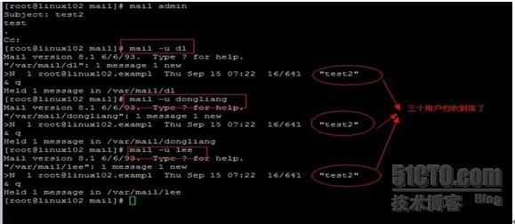
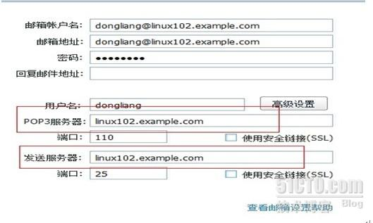
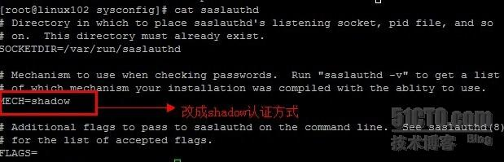
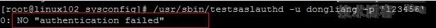

来源：
http://20101218.blog.51cto.com/283611/701794
Internet上最基本的服务，现在应该大部分人都有自己的邮箱吧，用的人多，但理解的人估计没多少，我自己以前也是常常用，但对其原理并不操心。今天就来操心下，进行个小总结
一．邮件服务的基本流程
邮件服务器构成了电子邮件系统的核心。每个收信人都有一个位于某个邮件服务器上的邮箱(mailbox)。首先，当你将E-mail输入你的计算机开始发送时，计算机会根据SMTP协议和TCP/IP协议的要求将你的信件"打包"，并加注信件头后送到你所属服务商的邮件服务器上，这就相当于我们平时将信件投入邮筒后，邮递员把信从邮筒中取出来并按照地区分类。然后，邮件服务器根据你注明的收件人地址，通过路由器按照当前网上传输的情况，寻找一条最不拥挤的路径，将信件传到下一个邮件服务器。接着，这个服务器也如法炮制，将信件往下传送。参与传递信件的每一个服务器都会在信件头上注明自己的名称以及上一级邮件服务器的名称和有关的传输记录。这一步相当于邮局之间的转信，即当邮件被分类以后，由始发地邮局运往目的地的省会邮局，然后由省会邮局转给下一级的地区邮局，这样层层向下传递，最终到达用户手中。最后，E-mail被送到用户服务商的服务器上，保存在服务器上的用户E-mail信箱中。用户个人终端电脑通过与服务器的连接从其信箱中读取自己的E-mail。这一步相当于信件已经被传送到了你的个人信箱中，你自己拿钥匙打开信箱就可以读取信件了。
比如dl的邮箱用于管理和维护已经发送给他的邮件消息。一个邮件消息的典型旅程是从发信人的用户代理开始，游经发信人的邮件服务器，中转到收信人的邮件服务器，然后投递到收信人的邮箱中。基本过程就是如此。
二．相关名词解释
1. MUA (message user agent)
邮件用户代理; 由于通常我们 Client 端的计算机都无法直接寄信的，所以，需要透过 MUA 来帮我们传达信件，不论是送信还是收信，Client 端的用户都需要透过各个操作系统提供的 MUA(比如foxmail和outlook) 才能够使用邮件系统.
从MTA取的信，或者通过POP，IMAP把信发到MTA上（将信息传送给邮件传输代理（MTA ））---后面会详细提及
2.MTA (message transfer agent)
邮件传输代理，MUA 是用在 Client 端上面的软件，那么这个 MTA 就是用在邮件主机上面的软件；监视MUA的请求 ，找出对方的MTA，把信传到对方MTA服务器，或者把信收到邮件队列（决定信息送至目的地的路由，然后根据情况决定是否还需要将信息交给中介邮件传输代理）
其功能有以下几个：
★收受外部主机寄来的信件：既然是邮件主机，那么接收邮件就是其主要功能， MTA 最主要的功能就是收受外部来的信件，只要这个信件里面有 MTA 内部的账号时，那么这封信就会被 MTA 收下来；
★帮使用者寄出信件：只要使用者具有合法的使用MTA的权利，那么就可以利用这部MTA将信件传送出去，只不过MTA会将信件送给目的地的MTA而不是目的地的MUA，这个可千万别弄混了。比如，我用我的qq邮箱给朋友的163邮箱发信，那么我肯定是通过qq的邮件服务器（MTA）发送给朋友的网易邮件服务器（MTA），然后我朋友才从其个人电脑上通过MUA软件（比如foxmail，outlook）来收取网易服务器上的信件。这就是前面说的监视MUA的请求
，找出对方的MTA，把信传到对方MTA服务器
★让使用者自己的信可以收回去：使用者可以将放置在邮件主机的信件收到自己的个人计算机上面收看。
3.MDA (message deliver agent)
邮件投递代理 ---把信最终投递到具体的用户；主要功能是将MTA所收到的信件，依照信件的流向（送到那里去）来将该信件放置到本机账户下的邮件档案中（mailbox_收件箱），或者再经由MTA将这个信件发送到下个MTA；
如果我们的信件流向是流向本机，这个邮件代理功能就不仅限于将MTA传递来的邮件放置于使用者的mailbox，其还具备一定的邮件分析功能：比如我们申请的一些网站的邮箱常常具备的过滤垃圾邮件的功能，其会自动将一些名字比较符合“垃圾”的邮件自动拒绝或者放置与垃圾桶中等等。还有就是我们收信时候常常会遇到的自动回复功能。比如我给无忧网上的公司发招聘邮件，我常常会收到其自动回复类似于欢迎应聘之类的信息，这也是MDA的功能。
我们使用比较广泛的我们使用的foxmail和outlook只是一个MUA和MDA，而一个邮件服务器扮演了两个角色，MTA和MDA
三．基本流程
其实前面已经说过流程了，不过在明白相关的名字解释后，再来叙述次整个流程似乎概念会更清晰些。基本流程如下：
1.使用者利用MUA寄信到MTA上面。
2.MTA收到自己的信后，交由MDA发送到该账号的mailbox中。
3. MTA 将信再转送出去：如果由 第一步来的信件的收件人并不是 MTA 的内部账号，那么该封信将会被再转送出去，这也就是邮件传递（relay）的功能
4. 远程 MTA 收受本地的 MTA 所发出的邮件：远程的 MTA 会收受我们这部 MTA 的信件，并将该信件交给他的 MDA 来处理，此时，信件会存放在远程的 MTA 上面，等待使用者登录读取或者下载回去！
举个例子
我电脑上装有foxmail软件，我通过此软件将我qq邮箱的信发送给我网易邮箱：
1. 首先打开我的
foxmail，寄信人是
dl@qq.com,收信人是
dl@163.com.填写好信的内容后，我点发送开始寄信，这个时候信是先邮寄到QQ公司的MTA服务器上的（这就是前面说的第一步）
2. QQ公司的MTA服务器收到俺的MUA传递来的信后，会判断这个收信地址是否是QQ公司MTA的内部地址，如果是的话，则直接传递给MDA（foxmail），并放置到其收件箱中（这就是前面说的第2步）
3. QQ公司的MTA服务器经过判断，发现原来收信人是网易邮箱，不是咱QQ的，那么QQ公司的MTA会将此信根据地址发送给网易公司的MTA服务器。（这就是第三步）
4. 网易公司收到来自QQ公司的邮件后，也会做出判断，根据其具体收信地址将信件交给某个账号下的MDA来处理，在客户端的MDA（foxmail）没有收信前，邮件会一直保存在网易的MTA上，等待使用者登陆读取或者是下载。
通常情况下 一封 邮件通过MUA把信传到MTA服务器 或者从MTA服务器把信取到本机通过MTA传送给对方的MTA服务器的服务队列，通过MDA发给指定用户。
四．使用的协议
在网络世界干什么都是离不开协议的，邮件服务自然更不能例外。有三个基本的协议是必须要提到的：
1.SMTP：Simple Mail Transfer Protocol/简单邮件传送协议
定义邮件传送,基于TCP服务的应用层, 明文传送,SMTP协议使用25端口；在寄信的时候MUA会主动连接MTA的25端口，然后将信由MTA的SMTP协议发送出去，而邮件主机MTA在传递的时候，也是经由下一部MTA的25端口来将信送出去。
基础使用方法：
telnet linux102.example.com 25
ehlo linux102 //通报来访者地址
mail from :dl@ linux102.example.com //发件人地址
rcpt to :dl@163.com //收件人地址
data //输入正文内容
it's test! //正文内容
. //句号的圆点表示写信结束的意思
quit //退出
2.POP3:Post office Protocol 3 / 邮局协议第三版
POP3协议适用于不能时时在线的邮件用户。支持客户在服务器上租用信箱，
然后利用POP3协议向服务器请求下载，基于TCP/IP协议与客户端/服务端模型，POP3的认证与邮件传送都采用明文，使用110端口。
基本流程是收信是 MUA 经由 POP协议来连接到 MTA 的使用者 Mailbox，以读取或者下载使用者在 Mailbox 当中的信件。目前常用的 POP 协议为 POP3 ( Post Office Protocol version 3 )，你的 MUA 经由 MTA 的 port 110 将信件由 MTA 的 mailbox 当中将信件收到本地端的 MUA 上面供你浏览！同样的，只要 MTA 与 MUA 同时支持 POP3 这个协议，那么信件就可以自由的收受了！
所以我们知道了！
3.IMAP:internet Message Access Protocol /英特网信息存取协议
另一种从邮件服务器上获取邮件的协议，与POP3相比，支持在下载邮件前先行下载邮件头以预览邮件的主题来源，基于TCP/IP，使用143端口。
在 pop3 的收信协议中，一般来说，当 client 端收完了主机端的信件之后，则该信件会主动的被主机端所删除！不过， IMAP 则可以避免这个问题！ IMAP 具有让使用者 ( client 客户端 ) 自行定义信件放置的目录功能，以及是否要储存下载的信件之后，原信件是否保留在主机上面的功能！
总结：寄信的时候通过25端口使用smtp协议，收信的时候则是通过110端口使用pop3协议。
通常一部提供收发信件的 MTA ( 不考虑 Web 接口的邮件主机 ) 至少需要两个协议，分别是 SMTP 与 POP3 ！而且，只要你的 MUA 与 MTA 同时均支持 SMTP 与 POP3 ，那么彼此就可以沟通，这也是为什么你使用 foxmail 寄出的信，但是你的朋友可以使用 outlook 收下来的原因！
五．什么是 Relay 与认证机制
前面我们已经提起过relay。现在我们再回顾一下：当MTA服务器收到邮件后，如果收件者不是MTA本身的账号，那么此MTA会将邮件再传送到下一个MTA上去，这个功能其实就是relay。因为每台MTA都是具有relay功能的，那是否任何人都可以通过任意一台MTA服务器进行邮件传递了呢？为了防止此类事情的发生，所以都不会对外完全的开放 Relay 的功能的！而是预设为仅针对主机开放relay功能（通过access），这样的MTA是可以收到来自internet上面注明是本机账户的信件，所以MTA在收信上是OK的。但是在发信的时候，就比较麻烦了，凡是在access中没设置的对外地址，则不能对外发信，而且如果通过access来设置一些规范内的ip的话，也很麻烦，万一是adsl，那ip地址来回改变的岂不是很糟糕。所以就需要通过邮件认证机制来防范
『邮件认证机制』在 MTA 当中加入需要检查发信者的『账号与密码』比对的功能，当 MTA 接到来自 Client 端的传信需求时，会检查来自 Client 端的认证比对(账号密码)，如果账号与密码比对正确，则开始接受信件并帮忙转信，如果比对不正确则将该 MTA 并不会接受该封信件，直接在 Client 端显示『不接受您的信件』之类的讯息！目前有相当多种的邮件认证机制，目前广为使用的是SMTP 邮件认证这个机制。
所谓的 SMTP 邮件认证机制，顾名思义，就是在 smtp 这个协定上面动手脚的一个机制！亦即是在寄信的时候，(由MUA 到 MTA 那个第一个的步骤中 )，我们的 MTA 主机『一定要求检验 MUA 发信者的账号与密码！』这样的功能！那么你的 MTA 就可以在经过认证之后，提供认证者的 Relay 功能，因为经由『认证』的机制，你的
MTA 会去分析寄信者的相关信息，通过后才会接受信件并帮他们寄信，否则就不接受信件！透过这样的机制，您将不需要规范 Relay 的 IP 或网段，直接交给 SMTP 邮件认证来帮你管理你寄件者的 Relay 功能。这就是我们常用的邮箱账号和密码。
六．常用软件
sendmail 是使用smtp协议的邮件提交工具，承担mta和MDA的作用
后台进程：sendmail；脚本：/etc/init.d/sendmail ；使用端口：25(smtp)；所需RPM包：sendmail
1. 安装所需的软件
[root@linux102 ~]# rpm -qa | grep sendmail //检查我是否安装了此软件
sendmail-cf-8.13.8-2.el5
sendmail-8.13.8-2.el5
[root@linux102 ~]# rpm -q mailx //检查我是否有安装mailx
mailx-8.1.1-44.2.2
2. 套件内容解释
安装好sendmail后，linux系统上会有如下一些目录etc/mail/sendmail.mc;/etc/mail/sendmail.cf;/etc/mail/access;/etc/mail/access.db;/etc/aliases;…..等等。主要分为以下几类：
（1） 设定档案：
Sendmail 的设定档几乎全部都在 /etc/mail 底下，主要由以下几个：
★sendmail.cf：是默认的sendmail主要配置文件，但这个文件是很复杂的，我们一般不做更改，(主要我们也看不懂啊)而是通过对sendmail.mc的更改来变相的更改sendmail.cf文件
★ local-host-names：这个档案主要用来处理一个主机同时拥有多个主机名称时候的收发信件主机名称问题，当你的主机拥有多个 HOSTNAME 的时候，多个主机名必须都写在此文件中时，这几个主机名的域名才可以正常收信。类似于web服务器中的虚拟主机设置。比如linux102.example.com和linux103.example.com是两个主机名，现在我想这两个主机名都可以收发邮件，那么就要将这2个名字都写在
local-host-names中去，一个名字占一行。
★ access.db：这个是规定谁可以或不可以使用本邮件服务器的数据库，要转成这个数据库需要藉由 makemap 以及 /etc/mail/access 档案的配合！这个档案可以说是
Sendmail 里面最重要的『使用者权限管理』的数据了！
★ /etc/mail/aliases.db 或 /etc/aliases.db：这个 aliases.db
是用来设定『信箱别名』！可以由这个档案的设定来规范你的『群组收信』！不过，还需要由 aliases 及 newaliases 来做成这个档案才行！比如我想发给admin 的信同时被test1和test2收到，那么就可以在这里面进行设定。后面再提及。
（2） 执行档案
★ /usr/sbin/sendmail：就是 sendmail 的主要执行档！他会读取 sendmail.cf 这个档案的设定内容喔。你在发送信件时，就是使用这支程序啦！启用这支程序之后，预设的启用的
25端口
★/usr/sbin/makemap：主要将 access 转成 access.db 的数据库制作的执行文件；
★ /usr/sbin/mailstats：将 /etc/mail/statistics 档案读出来的一支程序！可以查看到目前为止 Sendmail 工作共传送、接收多少邮件啰！
★/usr/bin/newaliases：将 /etc/mail/aliases 转成 /etc/mail/aliases.db 的执行档！不仅仅可以转换aliases，其他的也可以。
★ /usr/bin/mailq：用来观察 /var/spool/mqueue 这个邮件暂存目录的数据情况的指令！
（3）邮件的相关目录
sendmail 接收下来的邮件放置在哪里呢？
★ /var/spool/mail ：这个是邮件『收受下来之后，每个使用者信件放置的目录』，一个账号会使用掉一个档案，例如你的账号为 test ，那么你的信在 Server 中时，就是 /var/spool/mail/test
这个档案了！此外，你的 POP3 的协议亦是使用这个目录中的 mailbox 做为预设的邮件取得的档案数据★ /var/spool/mqueue：当邮件由于对方主机的问题，或者是网络的问题，而无法送出去时，那么该封邮件将会暂时的存放在这个目录下，然后主机会每隔大约 30 ~ 60 分钟重新尝试传送一遍，通常设定在五天内该封信件还寄不出去，那就会退给原发信者了！ Mailq命令查看的就是此文件
★ /var/spool/clientmqueue：这是新的 sendmail 8.12 版本才会出现的队列目录。当你使用简单的sendmail发邮件的时候，或者系统默认要发一些邮件（比如cron发的邮件）的时候，首先会把邮件拷贝到这个目录里，然后等待MTA(mail
transfer agent) 来处理，MTA做的事情通常是把这个目录中的邮件弄到/var/spool/mqueue里，然后再发送到真正的目的地。出现/var/spool/clientmqueue/非常大的情况通常因为没有合适的MTA发送邮件，就都积累在这里了
大致上的档案就是这样啦！接下来谈一下如何设定 sendmail 吧！
- 设定sendmail
在配置sendmail前，我们一般要设置好DNS服务，毕竟邮件服务是和DNS紧密相连的，不然你的邮件域名在网络上找不到岂不是白搭。所以我们要检查DNS是否有MX记录指向你的邮件服务器。这里就不细说了，dns前面已经总结过了，按前面所说的配置就好了，这里只是强调下别忘记在dns中做相应的搭配。
（1） 搭建一个简单的可以收发邮件的服务器
通过前面的总结我们知道sendmail最主要的配置就是sendmail.cf文件。我们可以通过配置sendmail.mc来进行更改sendmail.cf。
在sendmail.mc文件中是以dnl为开头，以dnl为结尾，配置参数写在两个dnl之间。
[root@station47 mail]# vi sendmail.mc
116 dnl # address restriction to accept email from the internet or intranet.
117 dnl #
118 dnl # DAEMON_OPTIONS(`Port=smtp,Addr=127.0.0.1, Name=MTA')nl //注释掉此行，意思是监听所有端口，否则只能本机去收发信件
我们说过，默认的设定档里面已经将邮件来源的接口定义为『仅来自 127.0.0.1 这个界面』，亦即是只监听本地端口，要让其他客户端可以使用我们的服务器，我们要把127.0.0.1改成0.0.0.0或者直接注释掉。请注意，这里仅开放『监听』而不是开放 Relay。
改好后，保存退出，并重启服务
[root@station47 mail]# make -C /etc/mail //本身编辑的是sendmail.mc文件，必须make以此来编辑sendmail.cf文件。其实make可以编辑/etc/mail下的所有需要将数据转换成数据库的文件。
make: Entering directory `/etc/mail'
make: Leaving directory `/etc/mail'
[root@station47 mail]# service sendmail restart
Shutting down sendmail: [FAILED]
Starting sendmail: [ OK ]
Starting sm-client: [ OK ]
查看端口是否被监听：
试验收发邮件
[root@linux102 mail]# telnet 192.168.1.102 25 //通过25端口连接102服务器
Trying 192.168.1.102...
Connected to linux102.example.com (192.168.1.102).
Escape character is '^]'.
220 linux102.example.com ESMTP Sendmail 8.13.8/8.13.8; Tue, 13 Sep 2011 07:50:54 -0700
mail from :dongliang@linux102.example.com //寄信人
250 2.1.0 dongliang@linux102.example.com... Sender ok //sender ok 表示成功
rcpt to: lee@linux102.example.com //收件人的地址
250 2.1.5 lee@linux102.example.com... Recipient ok
Data //开始撰写正文
354 Enter mail, end with "." on a line by itself //表示文字末尾用"."来结束
Test //正文内容
test
. //结束正文
250 2.0.0 p8DEosgN021895 Message accepted for delivery
Quit //退出
221 2.0.0 linux102.example.com closing connection
Connection closed by foreign host.
[root@linux102 mail]# mail -u lee //查看lee用户的收件箱
Mail version 8.1 6/6/93. Type ? for help.
"/var/mail/lee": 2 messages 1 new 2 unread
U 1 MAILER-DAEMON@163.co Mon Sep 5 05:56 66/2207 "Warning: could not se"
>N 2 dongliang@linux102.e Tue Sep 13 07:51 13/617
& 2 //查看第2封信
Message 2:
From dongliang@linux102.example.com Tue Sep 13 07:51:38 2011
Date: Tue, 13 Sep 2011 07:50:54 -0700
From: linux02 <dongliang@linux102.example.com>
X-Authentication-Warning: linux102.example.com: linux102.example.com [192.168.1.102] (may be forged) didn't use HELO protocol
test
test
&
Ok，说明我刚才通过dongliang 这个用户给lee用户寄信是成功的。瞧最简单的收发信件就是这么简单就可以了。
（2） 通过多个主机名来收发邮件
前面我们是最简单的一个收发邮件的方法，但前面这个我们是通过ip地址去访问的，但如果我们是用域名呢？首先假设我的DNS服务都是已经配置ok的，这个时候如果我的主机有两个域名linux102.example.com和 linux103.example.com.
现在我只想linux102的域名收发信件，而另外一个域名不收发信件，则只需将linux103的域名写入local-host-names即可，如果我想要两个域名都可以收发信件则需将两个域名都写入local-host-names中：
[root@linux102 mail]# vi local-host-names //编辑local_host_names
# local-host-names - include all aliases for your machine here
linux102.example.com //添加主机名称
linux103.example.com
[root@linux102 mail]# telnet 192.168.1.102 25
Trying 192.168.1.102...
。。。。。。。。。。。
mail from:dongliang@linux102.example.com //linux102的域名为寄信者
250 2.1.0 dongliang@linux102.example.com... Sender ok
rcpt to:lee@linux103.example.com //linux103的域名为收信者
250 2.1.5 lee@linux103.example.com... Recipient ok
data test1
354 Enter mail, end with "." on a line by itself
it is test1 //邮件正文
.
250 2.0.0 p8DF8o5g022116 Message accepted for delivery
quit
221 2.0.0 linux102.example.com closing connection
Connection closed by foreign host.
[root@linux102 mail]# mail -u lee
Mail version 8.1 6/6/93. Type ? for help.
"/var/mail/lee": 2 messages 1 new 2 unread
U 1 MAILER-DAEMON@163.co Mon Sep 5 05:56 66/2207 "Warning: could not se"
>N 2 dongliang@linux102.e Tue Sep 13 08:11 11/482
& 2
Message 2:
From dongliang@linux102.example.com Tue Sep 13 08:11:03 2011
Date: Tue, 13 Sep 2011 08:08:50 -0700
From: linux02 <dongliang@linux102.example.com>
it is test1 //邮件正文
&
看到没，在local-host-names中添加上主机的两个域名，则此两个域名就都可以收发信了。如果我当时只加了linux102，而没有添加linux103，则会出现如下错误：
mail from:dongliang@linux102.example.com
250 2.1.0 dongliang@linux102.example.com... Sender ok
rcpt to:lee@linux103.example.com
550 5.7.1 lee@linux103.example.com... Relaying denied. IP name possibly forged [192.168.1.102]
不过我发现，预设的主机名不受此影响，就是说预设的主机名称，无论是否在此文件中，都是可以收发信的。
（3） 设定邮件服务器的访问权限
前面我们提到access可以用来设置访问控制，拒绝或允许的客户端给我寄信或者通过我的MTA来发信。
语法：
规定的范围 规定可以在sendmail上面的动作
IP/不完整IP/主机名称/E-mail RELAY/DISCARD/REJECT
在『规定范围』与『规定可以在 sendmail 上面的动作』两项目之间最好以 <tab> 按键来隔开！『规定的范围』还可以设定『来源』与『目的』喔！例如：
from:dongliang@linux102.example.com REJECT
to:dongliang@linux102.example.com REJECT
from：代表的是“来源”的意思，表示来自某邮箱的信如何处理。比如我上面举的例子：from:dongliang@linux102.example.com REJECT 意思就是dongliang这个账号的邮箱无法对外发信，但却可以收到别人给他寄的信。（来自dongliang这个账号的信是被拒绝的）
to：代表的是“目的”的意思，表示发送到某个邮箱的信如何处理。比如前面的例子：to:dongliang@linux102.example.com REJECT 意思是dongliang这个账号可以对外发信，但却无法收到其他邮箱发给其的信（发送到dongliang这个账号的信都被拒绝）
如果既不写from也不写to的话，那么其收信发信都会收其控制
RELAY：允许该来源主机所传送过来的邮件可以被接受，然后再进行 Relay的 动作。
REJECT：若来源主机的主机名称或 IP 在 REJECT 的情况下，则我们 Mail Server 将不会接受对方的邮件内容( body 部分)，『并且会回传一个错误或警告讯息给原发信端』
DISCARD：与 REJECT 相似，亦即关闭规定范围内的计算机主机的 RELAY 功能，不过， Sendmail 会直接将该信件『丢弃』而不会『退回』！(我试验发现设置为DISCARD的时候，显示的是邮件已经发送成功，但对方并没有收到信，即是没有报警信息)
基本流程：当信件想要使用我们的邮件主机来进行寄信或者是 Relay 的动作时，首先会传送 mail header 到我们的 mail server 上面，这也就是一些邮件的基本数据(如认证信息、来源IP、目标的 MTA 等等)，但并不包含邮件的内容(例如信件本体、附件夹带等等的内容)。也就是说，一封邮件基本上可以分为两大部分，分别是
Header 与 Body ，Header 仅记录邮件基本信息，Body 才是真正的信件内容。当邮件想要进入 MTA 时，会先发送 Header 给 MTA ，MTA 判断这个 Header 的信息是可接受的之后，才后继续接受来源主机的邮件 Body 内容！如果这些基本讯息传送过来的主机信息包括在 /etc/mail/access.db 里面所记录到的主机(或IP)范围时，就可以指定上面这些动作
举例：
[root@test root]# vi /etc/mail/access
# 预设情况下有启用的 IP
localhost.localdomain RELAY
localhost RELAY
127.0.0.1 RELAY
# 想要开放权限的 IP 与网域
192.168.0 RELAY //开放某个网段可以收发邮件
140.116.44.125 RELAY //运行某个IP可以收发邮件
# 挡掉的 IP、主机名称与 E-mail
qq.com DISCARD //阻止某个域名的信件
192.168.1.100 DISCARD //阻止某个ip
dl@linux102.example.com REJECT //阻止一个具体的账号
# 储存后离开
[root@station47 mail]# make -C /etc/mail //将access数据转换成数据库文件
总结：
当 MTA 收到一封邮件，并且该邮件的『信件收件者』为 MTA 本身的用户账号时，此时将会以本机端 ( local ) 的收件规则来进行收件，如果 /etc/mail/access.db 没有针对来源 IP 或者 host 或者 e-mail 抵挡时，则该封信会被我们的 MTA 收下来，并且储存到 /var/spool/mail 里面。例如，当我的 linux102.example.com 收到一封给 dl@linux102.example.com 的邮件，并且 /etc/mail/access.db
没有针对来源抵挡 ( 在不考虑 procmail 的情况下 ) ，那么我的 linux102.example.com 这部主机，会立刻将该封邮件存放到 /var/spool/mail/dl 里面去，而不必经由『认证』或者抵挡的机制。请注意，在这个情况中， Sendmail 并不会去检查送件者是否来自于信任网域( 只要 /etc/mail/access 没有挡到的主机或IP或其它的 e-mail 信息 )！
如果这封邮件的『信件收件者』并没有 MTA 本身的用户账号时，那么 MTA 会以 SMTP 这个外送规则来传信，此时 MTA 会开始去检查 /etc/mail/access.db 这个数据库里面，任何有关于送件者的 IP、E-mail 以及相关的动作等，如果该封邮件有相关的数据在 /etc/mail/access.db 里面时 ( 不论是 RELAY, REJECT 或是 DISCARD ) 那么该封邮件就会依照 /etc/mail/access.db 里面指定的行为进行邮件的动作(可能是 RELAY
或 DISCARD 等等)！
如果该封邮件经过上面两道手续后，仍然找不到任何有关的动作讯息，那么这封邮件将会退回给原发信者！
前面那么说估不好理解，其实上面这段话可以这么理解，如果MUA给MTA发信其信的地址不是MTA本身的账号时，其会检查access中的所有规则，严格按照规则来办事，也就是说默认对外发信是阻止的；如果其地址是本身的账户，那么也会检查access中的设置，但若没有专门的设置，则默认是允许的。
这就是我们最开始讲“relay和认证机制”中说的，当然上面说的这些都是在没有受到SMTP邮件认证时候的动作。
（4）群发邮件（别名）
其实我这里是想说是其账号起个别名，也就是假名的意思，比如发送给admin这个账号的邮件根据别名其实都发送给了dl这个账号了。通过这个别名的机制可以实现群发功能
[root@linux102 mail]# vi /etc/aliases
# trap decode to catch security attacks
decode: root
admin: dongliang,lee，dl //给dongliang，lee，dl三个用户起个别名admin，记得用逗号进行隔开哦
# Person who should get root's mail
#root: marc
[root@linux102 mail]# newaliases //让更改后的aliases文件生效，将数据变成数据库组，有点类似access
/etc/aliases: 77 aliases, longest 16 bytes, 786 bytes total
[root@linux102 mail]# service sendmail reload //重读配置文件
reloading sendmail: [ OK ]
reloading sm-client: [ OK ]
不过这样也有一个问题，虽然这样可以实现群发功能，但如果需要群发的账号很多，我总不能把所有的账号都添加在/etc/aliases中吧，那样岂不是乱套了。所以我们可以想别的办法来对付这种需要群发账号很多的情况：
[root@linux102 mail]# vi /etc/aliases
# trap decode to catch security attacks
decode: root
admin: :include:/etc/mail/users //users文件中包含的用户名都可以接收到发送给admin的邮件
# Person who should get root's mail
#root: marc
[root@linux102 mail]# vi users //给users文件中添加所需群发的用户名
dongliang
lee
dl
[root@linux102 mail]# newaliases //让更改后的aliases文件生效，将数据变成数据库组
/etc/aliases: 77 aliases, longest 24 bytes, 794 bytes total
[root@linux102 mail]# service sendmail reload //重读配置文件
reloading sendmail: [ OK ]
reloading sm-client: [ OK ]
下来我来查看下是否可以继续群发：

其实这个功能也可以用来做备份之用，比如lee账号是我的备份账号，凡是给dl账号发信的都给lee也发一封，则可以这样去做
[root@linux102 mail]# vi /etc/aliases
# trap decode to catch security attacks
decode: root
dl： dl,lee //凡是给dl发信的都给lee用户也备份一份，当然也可以传送给外部的MTA，比如写成dl,dl@qq.com，那么就可以实现在给dl发信的同时也给dl@qq.com发信。
# Person who should get root's mail
#root: marc
[root@linux102 mail]# newaliases //让更改后的aliases文件生效，将数据变成数据库组
/etc/aliases: 77 aliases, longest 24 bytes, 794 bytes total
[root@linux102 mail]# service sendmail reload //重读配置文件
reloading sendmail: [ OK ]
reloading sm-client: [ OK ]
关于aliases在多说点东东当我们查看/etc/aliases时，里面的那些文件都表示什么意思呢？
[root@test root]# vi /etc/mail/aliases
# 基础 sendmail 资料！由于 sendmail 预设使用 mailer-daemon 与
# postmaster 做为数据发送者，或者是信件被退回时的账号！但是我
# 们的系统并没有这两个账号，因此，必需要使用 aliases 的功能！
# 如果是使用 sendmail ，那么底下这两行『务必存在』才行！
mailer-daemon: postmaster
postmaster: root
# pseudo accounts. 也就是系统的账号，这些账号是给系统来使用的，
# 基本上，这些账号并无法登入主机，但是偏偏某些程序进行时，产生
# 的错误讯息可能会寄给该系统账号，但该账号无法登入，所以会让系统
# 无形之中遗失许多的信息，所以啰，这些账号也需要来做 aliases
# 并且将收件者交给系统一定会有的人物！ root 是耶！通常这些账号
# 常见的有 bin, daemon, adm, lp, sync, shutdown, halt, mail, news
# uucp, operator, games, gopher, ftp, nobody, named, xfs, system,
# 等等等等！
bin: root
daemon: root
adm: root
lp: root
sync: root
shutdown: root
....(略).....
# trap decode to catch security attacks 有些攻击者在攻击你的主机时，
# 该相关的信息会寄给你的 decode 这个账号，将他转成 root 吧！
decode: root
# 这是 root 的收件信者！ 由于预设状况中， root 是不能在主机外部
# 的任何一部计算机收信的！如果您想要让你的一般账号可以接收 root 的
# 信件，以实时掌握主机信息，那么底下的 # 将他打开，后面接你的
# 账号吧！
#root: your_account
（5） 伪装邮箱域名
如果我想将我的dl@linux102.example.com伪装成dl@163.com该如何做呢？
[root@station47 mail]# vi sendmail.mc //将配置文件中的如下几行改为此设置，这里我们是将伪造成163的邮箱了
EXPOSED_USER(`root')dnl
FEATURE(masquerade_envelope)dnl
MASQUERADE_AS(`163.com')dnl //要伪装成的域名
FEATURE(masquerade_entire_domain)dnl
[root@station47 mail]# make -C /etc/mail
make: Entering directory `/etc/mail'
make: Leaving directory `/etc/mail'
[root@station47 mail]# service sendmail reload
reloading sendmail: [ OK ]
reloading sm-client: [ OK ]
[root@station47 mail]# su – dl //超级用户无法伪装，所以我进入一个普通用户
[dl@linux102 ~]$ mail dongliang //给dongliang这个用户发信
Subject: test10
test10
.
Cc:
[root@linux102 mail]# mail -u dongliang //查看是否收到信
Mail version 8.1 6/6/93. Type ? for help.
"/var/mail/dongliang": 1 message 1 new
>N 1 dl@163.com Thu Sep 15 09:02 16/602 "test10" //域名已经变成163.com了
&
（6） 虚拟用户 virtusertable
这是一种虚拟用户方式，这种方式运行一台机器拥有多个虚拟域，这个在web服务器中是常常遇到的，就好比我们web服务器上的虚拟用户一样，这是通过FEATURE(virtusertable)功能实现的，而虚拟主机的文件缺省是/etc/mail/virtusertable.db，它用/etc/mail/virtusertable文件生成，这个文件的形式类似于aliases文件，即左地址右地址，中间用Tab键分开。例如：
someone@tonk.com dl //将给someone@tonk.com的用户发给本地dl用户
dl@tonk.com error:No such user //返回一条出错信息
@tonk.com dl@linux102.example.com # 所有的邮件都给dl
@tonk.com %1@linux102.example.com # 给域名不同的同一用户
用法大概就是上面这样的例子，但要注意几点：第一，你的DNS记录中， 应该有tonk.com这个记录，以便首先把邮件传递到正确的主机；第二，local-host-names应该包含tonk.com这个名字。因为这些数据映射左边的所有主机关键字都必须 在/etc/mail/local-host-names中存在；否则，sendmail将尝试在Internet上寻找该主机并把邮件投递到那里。也就是说比如网上有tonk.com这个域名，如果不在/local-host-names中添加的话，那么邮件会投递到tonk.com域名中的账户，而不会投递给我上面设置的用户。
我来举例说明：
设置virtusertable
[root@linux102 mail]# vi local-host-names
dl@tonk.com dongliang //发送给dl@tonk.com的用户发送给dongliang账号
lee@tonk.com error:you are wrong //给lee@tonk.com发信的时候报错误信息
@pp.com dl@linux102.example.com //给@qq.com发的信都发到dl@linux102.example.com邮箱下
@tonk.com 1%@linux102.example.com //比如发送给test@tonk.com的信发送给了test@linux102.examplecom
[root@linux102 mail]# vi local-host-names //将域名添加进去
# local-host-names - include all aliases for your machine here
linux102.example.com //添加前面所述的几个域名
tonk.com
qq.com
[root@linux102 mail]# make -C /etc/mail
make: Entering directory `/etc/mail'
make: Leaving directory `/etc/mail'
我们来发信试试我们的配置正确不
dl@tonk.com dongliang
@pp.com dl@linux102.example.com
aliases 文件同样可以将本地用户，映射到其它地址，那么和 virtusertable 的优先级如何？
★ 当接收者邮件地址的域部分在 /etc/mail/local-host-names 中又在/etc/mail/virtusertable中时,优先检查virtusertable文件,应用该文件中的定义规则.
★ 要应用virtusertable规则,则接收者邮件地址的域部分必须在 /etc/mail/local-host-names 文件中存在
★ 若接收者邮件地址的域部分在 /etc/mail/local-host-names 文件中但不在 virtusertable 文件中有相应的定义，则先只应用 aliases 中的定义去扩展别名,一旦扩展出的别名接收者邮件的域部分在 virtusertable 中有定义行时则决不再别名下去,马上运行virtusertable中的定义规则。
（7）genericstable
genericstable功能类似于给要发出的邮件起别名。例如，它可以把发给 trent@atrust.com的邮件映射到trent.hein@atrust.com。被重写的是信头而不是信封。邮件投递不受影响，只有回复会受影响。用于映射主机名的机制有几种，但只有genericstable可以在映射关键字中同时包括用户名和主机名。下来我们来举例说明
[root@station47 mail] # vi sendmail.mc //编辑配置文件
FEATURE(genericstable)dnl //我本机没有自己添加
FEATURE(`always_add_domain')dnl
GENERICS_DOMAIN_FILE(`/etc/mail/local-host-names')dnl //本机没有就自己添加
[root@station47 mail]# vi genericstable //新建此文件并编辑
lee@linux102.example.com dl@qq.com
test@linux102.example.com yangmei@tonk.com //将test@linux102.example.com地址发送的信伪装成yangmei@tonk.com，这里的伪装可以随意去书写，和前面伪装域名中的MASQUERADE_AS(`163.com')dnl选项无关
[root@station47 mail]# vi local-host-names //给local-host-names中添加本机域名
# local-host-names - include all aliases for your machine here
linux102.example.com
tonk.com
qq.com
pp.com
重启相关服务：
[root@linux102 mail]# make -C /etc/mail
make: Entering directory `/etc/mail'
make: Leaving directory `/etc/mail'
[root@linux102 mail]# service sendmail reload
Reloading sendmail: [ OK ]
reloading sm-client: [ OK ]
[root@linux102 mail]# su – lee //切换到lee用户
[lee@linux102 ~]$ mail dongliang //给dongliang账号发信
Subject: mail from lee
test
.
Cc:
从这个图中，我们看出前面的设定都是ok的
（8） 其他一些设定
FEATURE(`blacklist_recipients')dnl允许使用黑名单 查禁收件人，然后用户才可以用access文件 设定黑名单
FEATURE(`accept_unresolvable_domains')dnl 接受无法解析的域来的邮件
FEATURE(`promiscuous_relay')dnl 开启转发，默认是不允许的。
define(`confMAX_MESSAGE_SIZE'，`15000000')dnl 限制最大发送字节define(confMAX_HOP,30) 设置转发的地址不超过 30个
FEATURE （’relay_based_on_MX’ ） 自动接受DNS 中MX 记录来源的邮件转发
LOCAL_DOMAIN(`linux102.example.com')dnl 填写的是自己的域名
基本上服务器端基本的就这些内容了吧，如果还有别的什么欢迎大家留言
- 客户端的设定
（1）windows上的客户端设定
前面都是服务器端的设定，但是我们在日常应用的时候，可不是直接登录服务器的，而是通过客户端来进行访问的，比如foxmail或者outlook等。下来偶总结下客户端的设定
在进行客户端配置前，依旧需要在服务器上做些准备工作，那就是要安装一个软件：dovecot，其支持两个协议：pop3和imap。
我们前面总结过，收信的时候是MUA经过POP协议来连接到MTA的mailbox，以读取或者下载使用者当中的信件，也就是MUA经由MTA的110端口将信由MTA的mailbox中的信收到客户端的MUA上，所以只要MUA和MTA都支持POP3协议即可，那么安装了dovecot后，则服务器端也支持了pop了哦。
POP3协议适用于不能时时在线的邮件用户。支持客户在服务器上租用信箱，然后利用POP3协议向服务器请求下载，基于TCP/IP协议与客户端/服务端模型，POP3的认证与邮件传送都采用明文，使用110端口
IMAP：Internet Message Access Protocol/英特网信息存取协议
另一种从邮件服务器上获取邮件的协议，与POP3相比，支持在下载邮件前先行下载邮件头以预览邮件的主题来源，基于TCP/IP，使用143端口 。
安装好后，先开启dovecot
然后客户端的配置，我们以网易闪电邮为例子，看下如何设置：

是不是满简单的，只要将pop服务器和smtp服务器都填写ok就好了
（2）linux服务器上客户端设定
★ Mail功能
在linux上我们可以直接通过mail来收发邮件。直接输入mail是查看root的邮件，mail –u 用户名则是查看某个用户的邮件。
Mail 会主动的捉取使用者在 /var/spool/mail 底下的邮件信箱 ( mailbox )，
如图：
查看超级用户的信，其字段的含义为：
★读信：有看到『>』那个符号吧！那表示目前 mail 所在的邮件字段，
你可以直接输入 Enter 即可看到该封信件的内容！另外，你也可以在『&』之后的光标位置输入号码，就可以看该封信件的内容了！(注：如果持续按 Enter ，则会自『 > 』符号所在的邮件逐次向后读取每封信件内容！)
★显示标题：如果要重新显示每封信的标题，可以输入 h 即可；
★回复邮件：如果要回复目前『 > 』符号所在的邮件，直接按下『R』即可进入刚刚前面介绍过的 mail 文字编辑画面啰！你可以编辑信件后传回去啰！
★删除邮件：按下『 d## 』即可删除邮件！例如我要删除掉第 2 封邮件，可以输入『d2』如果是要删除第10-50封邮件，可以输入『d10-50』来删除喔！请记得，如果有删除邮件的话，离开 mail box 时，要使用『q』才行！
★储存邮件到档案：如果要将邮件资料存下来，可以输入『 s ## filename』，例如我要将上面第一封邮件存下来，可以输入『 s 1 uuencode 』即可将第一封邮件内容存成 uuencode 这个档案！
★离开 mail ：要离开 mail 可以输入 q 或者是 x ，请注意『输入 x 可以在不更动 mail box 的情况下离开 mail 程序，不管你刚刚有没有使用
d 删除数据；使用 q 才会将删除的数据移除，并且会将所有已读过的信件内容转存到你家目录下的 mbox 档案！』也就是说，如果你不想更动 mail box 那就使用 x 或 exit 离开，如果想要使刚刚移除的动作生效，就要使用 q 啦！不过，使用 q 之后，只有未读的信件才会保留在 /var/spool/mail/里面，其它已读的数据都会被存入
~/mbox 当中！例如 /home/dl/mbox 为储存dl已读过的信件！
★请求协助：关于 mail 更详细的用法可以输入 help 就可以显现目前的 mail 所有功能！
★ telnet的用法。
这个我们在一开始总结的时候提过，就不略过了
还有很多linux 的软件 今天就先不总结了，这里不是重点
七．邮件主机的安全设定
1.sendmail本身的安全设定：
sendmail 本身已经提供相当多的安全项目建议，其中，大部分是在于『目录与档案权限』的设定要求上面！
（1）请确定 aliases 这个档案的权限，仅能系统信任的 User 可以存取，通常其权限为 644 ；
（2）请确定 sendmail 读取的数据库 ( 多半在 /etc/mail 底下的 *.db 档案 )，例如 mailertable, access, virtusertable 等等，仅能由系统信任的使用者读取，其它一概不能读取，通常权限为 640 ；
（3）系统的队列目录 ( /var/spool/mqueue ) 仅允许系统读取，通常权限为 700 ；
（4）请确定 .forward 这个档案的权限也不能设定成为任何人均可查阅的权限，否则您的 e-mail 数据可能会被窃取～
总之，一般用户能够不用 .forward 与 aliases 的功能，就不要使用！
2.smtp认证
记得前面总结的时候，已经提及了什么是relay与认证机制，这里简单回顾下：
因为sendmail为了安全考虑，MTA服务器都不会对外完全开放relay功能，而是预设为仅针对主机开放relay功能（通过access），这样的MTA是可以收到来自internet上面注明是本机账户的信件，所以MTA在收信上是OK的，但是在发信的时候，就比较麻烦了，凡是在access中没设置的对外地址，则不能对外发信，而且如果通过access来设置一些规范内的ip的话，也很麻烦，万一是adsl，那ip地址来回改变的岂不是很糟糕。所以就需要通过邮件认证机制来防范
目前SMTP认证机制主要是透过Cyrus SASL这个套件来达成邮件的认证动作的，其进行的步骤如下：
★ sendmail会去调取SASL的函数库资料；
★ sendmail要去指定SASL的认证方式，一般而言，我们都会直接以 /etc/shadow 里面的账号密码来进行认证！至于针对 sendmail 的 SASL 认证方法则预设设定在 /usr/lib/sasl/Sendmail.conf 或 /usr/lib/sasl2/Sendmail.conf
(根据 cyrus SASL 版本的不同而异！)
★ SASL 根据设定的方法去取用密码与账号内容，并且加以比对，响应给 sendmail 该次比对是否成功！
Cyrus SASL是Cyrus Simple Authentication and Security Layer的简写，它最大的功能是为应用程序提供了认证函数库。应用程序可以通过函数库所提供的功能定义认证方式，并让SASL通过与邮件服务器主机的沟通从而提供认证的功能。
下面介绍使用Cyrus SASL包实现SMTP认证的具体方法。
（1） Cyrus-SASL认证包的安装
默认情况下，Red Hat Enterprise Linux安装程序会自动安装Cyrus-SASL认证包。读者可使用下面的命令检查系统是否已经安装了Cyrus-SASL认证包或查看已经安装了何种版本。
rpm -qa | grep sasl
如果系统还没有安装Cyrus-SASL认证包，应将Red Hat Enterprise Linux 5第1、2和3张安装光盘分别放入光驱，加载光驱后在光盘的Server目录下找到与Cyrus-SASL认证包相关的RPM包文件，然后分别使用rpm -ivh命令安装。例如，要安装第1张光盘上的cyrus-sasl-2.1.22-4.i386.rpm包文件，可使用下面的命令。
|
rpm -ivh /mnt/Server/cyrus-sasl-2.1.22-4.i386.rpm
|
（2） Cyrus-SASL V2的密码验证机制
默认情况下，Cyrus-SASL V2版使用saslauthd这个守护进程进行密码认证，而密码认证的方法有多种，使用下面的命令可查看当前系统中的Cyrus-SASL V2所支持的密码验证机制。
saslauthd -v
当前可使用的密码验证方法有getwent、kerberos5、pam、rimap、shadow和ldap。为简单起见，这里准备采用shadow验证方法，也就是直接用/etc/shadow文件中的用户账户及密码进行验证。因此，在配置文件/etc/sysconfig/saslauthd中，应修改当前系统所采用的密码验证机制为shadow，即：

（3） 测试Cyrus-SASL V2的认证功能
由于Cyrus-SASL V2版默认使用saslauthd这个守护进程进行密码认证，因此需要使用下面的命令来查看saslauthd进程是否已经运行。
ps aux | grep saslauthd
如果没有发现saslauthd进程，则可用下面的命令启动该进程并设置它开机自启动
/etc/init.d/saslauthd start
chkconfig saslauthd on
然后，可用下面的命令测试saslauthd进程的认证功能
/usr/sbin/testsaslauthd –u dongliang –p ‘123456’
其中，dongliang为Linux系统中的用户账户名，‘123456’为用户lbt的密码。该命令执行后，如果出现如图所示的结果，则表示saslauthd的认证功能已起作用。
但这里我发现一个问题，当我用/etc/init.d/saslauthd start启动saslauthd的时候，这个时候执行测试认证的命令（上面的命令）会发生如下图所示错误，提示认证失败。

但是如果我将saslauthd先关闭，用saslauthd –a shadow 进行手动启动的话则测试验证密码是成功的，这个问题我还没搞清楚，先列出来，回头弄懂了再来补上。
（4）设置sendmail启动smtp认证
在sendmail配置文件中找到以下的段落：
TRUST_AUTH_MECH(`EXTERNAL DIGEST-MD5 CRAM-MD5 LOGIN PLAIN')dnl（第一段）
define(`confAUTH_MECHANISMS', `EXTERNAL GSSAPI DIGEST-MD5 CRAM-MD5 LOGIN PLAIN')dnl（第二段）
dnl #DAEMON_OPTIONS(`Port=smtp,Addr=127.0.0.1, Name=MTA')dnl（第三段）
第一段本身是注释掉的，现在要把注释去掉。TRUST_AUTH_MECH”的作用是使sendmail不管access文件中如何设置，都能 relay 那些通过EXTERNAL, LOGIN, PLAIN, CRAM-MD5或DIGEST-MD5等方式验证的邮
件“（这就解决了前面一直考虑的access问题，特别是动态ip的情况）
第二段本身也是注释掉的，现在也要把注释去掉，confAUTH_MECHANISMS" 的作用是确定系统的认证方式。Outlook Express支持的认证方式是LOGIN。
第三段就不用多说了，没有smtp认证也是要注释掉的。
这里在补充一个地方：
dnl DAEMON_OPTIONS(`Port=submission, Name=MSA, M=Ea')dnl
将这段的内容改为：
DAEMON_OPTIONS(`Port=25, Name=MSA')dnl
意思是在smtp的默认端口（25）上进行认证，这样就强制所有使用该邮件服务器进行邮件转发的用户在认证后才能发邮件了。
这样做的原因是我在用outlook收发邮件的时候，尽管已经选择了SMTP的认证方式，但收发信的时候，认不认证信都照样照常收发，并不影响。这是因为smtp服务的默认端口是25，OutlookExpress上默认用的就是25，认不认证就无所谓了，都会通过，所以改为`Port=25, Name=MSA'则表示MSA收发邮件的时候，强制在默认25端口上进行身份认证。
都改好后，保存配置：
[root@linux102 ~]# make -C /etc/mail
make: Entering directory `/etc/mail'
make: Leaving directory `/etc/mail'
[root@linux102 ~]# service sendmail restart
Shutting down sm-client: [ OK ]
Shutting down sendmail: [ OK ]
Starting sendmail: [ OK ]
Starting sm-client: [ OK ]
都ok后，可以通过telnet 本机IP 25来验证sendmail服务是否已经正常启动，若登陆成功，且在AUTH后面有LOGIN则说明sendmail服务已经成功启动并且通过了SMTP认证，这样就可以在你的MSA上比如outlook或者foxmail上设置需要通过认证。如此一来我们的MTA在对外发信的时候就不用在受限制与access了。岂不是很方便。
Ok，这就是如何绕过access通过SMTP认证的方式来收发邮件。
八．补充知识
1.信件队列：当因为某些原因导致信件无法发送出去时，邮件将会放置到你的MTA主机的队列中去，一般是在/var/spool/mqueue中，然后会每隔一段时间，sendmail会尝试再次发送，一般sendmail 的预设是：
★如果该封信在五分钟之内无法寄出，则系统会发出一封『警告信』给原发信者，告知该封邮件尚无法被寄送出去，不过，系统仍会持续的尝试寄出该封邮件；
★如果在四小时候仍无法寄出，系统会再次的发出警告信给原发信者；
★如果持续进行五天都无法将信件送出，那么该封邮件就会退回给原发信者了！
在 Red Hat 的预设条件中，在 /var/spool/mqueue 当中的信件会每隔 60 分钟由 Sendmail 尝试重新传送一次到目的地去！这个尝试的时间是可以改变的！可以利用 sendmail 的指令或者直接修改 /etc/sysconfig/sendmail 里面的『QUEUE=时间』来修订！例如，如果你想要让 Sendmail 每隔 30 分钟就帮你尝试传送 /var/spool/mqueue 里面的未寄出的信件时，那么就将
/etc/sysconfig/sendmail 这个档案里面的『QUEUE=1h 』改成『QUEUE=30m 』即可！（选择鸟哥私房菜）
下面介绍两个命令：mailq 和mailstats
★ Mailq：是查询发信队列中的信的内容，如果有信没有发出去正在队列中的话，那么这个命令就可以查看。
Q-ID：表示此封邮件队列的代表号 ( ID )；
Size ：这封信有多大容量 ( bytes )的意思；
Q-Time：这封信什么时候进入 /var/spool/mqueue 这个目录的，并且说明无法立即传送出去的原因 (例如上面的 Deferred )；
Sender/Recipient：送信与收信者的电子邮件啰！
★mailstats：邮件在服务器中的状态，记录sendmail从开始到现在，收发邮件的总资料
M ：只是一些邮件工作(Mailer)代号的标题！不过，重要的地方在第五行的 T ，那个是『Total 总和』的意思～
msgsfr：共有多少封信由这个邮件工作 ( mailer ) 所发出去的呢？以第四行最右边看到的 local 为例，这表示由 local 发出的信件共有 249 封的意思～
bytes_from：表示的是信件数据容量，同样以第四行 local 为例，他发出的 249 封信，共有 406K ！
megsto：与 msgsfr 类似，只是 msgsfr 是寄出数据，而 megsto 则是『收到的信件封数』以上面的数据来看，则 local 收到的共有 223 封信！
bytes_to：收到信的容量
msgsrej：那个 rej 是 reject (拒绝) 的意思，这一列是信件被 deny 的次数；
msgsdis：那个 dis 是 discard 的意思，同样是 deny ，只是经由 discard 的程序就是了！
Mailer ：就是 sendmail 许多 mailers 当中的一个！那个 esmtp 主要用来对外，至于 local 则主要针对本机端的 mailbox 啰！